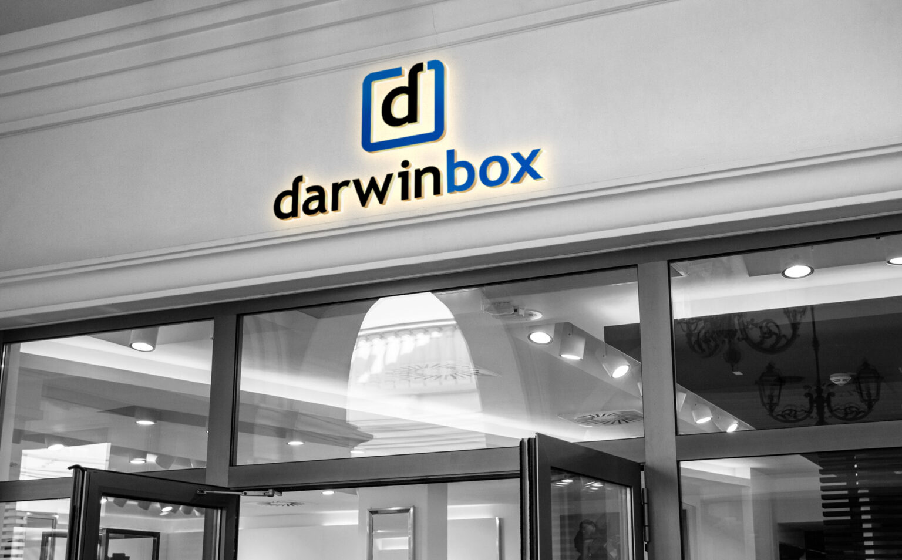
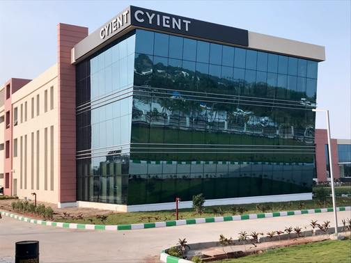

Product-Based Companies

1. Darwinbox
Industry:SaaS (HR Technology)
Founded:2015
Headquarters:Hyderabad, Telangana, India
Overview
Darwinbox is a leading HR technology company that builds a cloud-based, end-to-end human resource management platform used by enterprises across Asia. Its products cover the entire employee lifecycle, from hiring and onboarding to payroll, performance, and engagement.
Popular Products
- Darwinbox HRMS
- Darwinbox Payroll
- Darwinbox Performance Management
- Darwinbox Recruitment
- Darwinbox Engage
Technologies
- Java
- JavaScript
- React.js
- MySQL
- AWS
Career Roles
- Software Engineer
- Java Developer
- Full Stack Developer
- QA Engineer
Why Choose Darwinbox?
- One of Asia's fastest-growing HR technology SaaS companies.
- Builds a modern cloud-based platform used by large enterprises across the region.
- Strong focus on employee learning, innovation, and career development.
- Opportunity to work with modern technologies such as Java, JavaScript, cloud computing, and AI.
- Offers a collaborative work environment, competitive benefits, and excellent growth opportunities for software professionals.
Click here to go to Official Website
2. Microsoft India Development Center
Industry:Software Products and Cloud Services
Founded:1998 (Hyderabad campus)
Headquarters:Redmond, Washington, United States
Overview
Microsoft's Hyderabad campus is one of its largest development centers outside the United States. Engineering teams here build core products spanning cloud computing, productivity software, and AI, contributing directly to global platforms used by billions of users.
Popular Products
- Microsoft Azure
- Microsoft 365
- Microsoft Teams
- Dynamics 365
- Visual Studio
- Bing
Technologies
- C#
- .NET
- JavaScript
- React.js
- SQL Server
- Azure
- Python
Career Roles
- Software Engineer
- DevOps Engineer
- Frontend Developer
- Backend Developer
- Full Stack Developer
- Cloud Engineer
- Data Scientist
Why Choose Microsoft?
- Global technology leader with one of its largest development campuses located in Hyderabad.
- Opportunity to work on flagship products used by billions of people worldwide.
- Excellent learning and career growth opportunities.
- Exposure to cutting-edge cloud technologies and AI-powered product development.
- Competitive salary packages and industry-leading employee benefits.
Click here to go to Official Website
3. Amazon Development Center
Industry:E-commerce Technology and Cloud Computing
Founded:2004 (Hyderabad campus)
Headquarters:Seattle, Washington, United States
Overview
Amazon's Hyderabad campus is one of the company's largest development centers globally, building products across e-commerce, cloud computing, logistics, and devices. Engineering teams here work on core platforms that power Amazon's global operations.
Popular Products
- Amazon.in Marketplace
- Amazon Web Services (AWS)
- Amazon Pay
- Amazon Logistics
- Alexa
- Amazon Prime Video
Technologies
- Java
- JavaScript
- React.js
- Node.js
- DynamoDB
- Python
- AWS
Career Roles
- Software Engineer
- DevOps Engineer
- Frontend Developer
- Backend Developer
- Full Stack Developer
- QA Engineer
- Site Reliability Engineer (SRE)
Why Choose Amazon?
- One of the world's largest technology companies with a major engineering hub in Hyderabad.
- Opportunity to work on large-scale distributed systems and cloud infrastructure.
- Collaborative and innovation-driven work environment.
- Exposure to modern technologies, scalable systems, and enterprise software.
- Strong learning culture with excellent career growth opportunities.
Click here to go to Official Website
Service-Based Companies

1. Cyient
Industry:Engineering and IT Services
Founded:1991
Headquarters:Hyderabad, Telangana, India
Overview
Cyient provides engineering, digital transformation, and IT services to clients across aerospace, rail, semiconductor, and telecommunications industries, with its headquarters and largest campus located in Hyderabad.
Key Services
- Software Development & Application Services
- Engineering & Design Services
- Cloud Computing Solutions
- Data Analytics & Business Intelligence
- Digital Transformation
- Enterprise Application Services
Technologies
- Java
- .NET
- Azure
- SQL
- React
Career Roles
- Software Engineer
- Cloud Engineer
- QA Engineer
Why Choose Cyient?
- A well-established engineering and IT services company with a strong global presence.
- Provides opportunities to work on diverse client projects across aerospace, rail, telecom, and manufacturing.
- Offers excellent training programs, certifications, and continuous learning opportunities for career growth.
- Exposure to modern technologies including Cloud Computing, Artificial Intelligence, Data Analytics, and Digital Engineering.
- Collaborative work environment with global teams, competitive employee benefits, and strong opportunities for fresh graduates and experienced professionals.
Click here to go to Official Website
2. Deloitte USI
Industry:IT Consulting and Business Services
Founded:1998 (Hyderabad delivery center)
Headquarters:New York, United States
Overview
Deloitte's US-India (USI) delivery centers, including a major campus in Hyderabad, provide technology consulting, audit support, and business process services to Deloitte's global client base. The Hyderabad center specializes in software development, cloud transformation, and digital consulting.
Key Services
- Application Development & Maintenance
- IT Consulting
- Cloud Computing Solutions
- Data Analytics & Business Intelligence
- Cybersecurity Services
- Enterprise Application Services
Technologies
- Java
- JavaScript
- .NET
- Spring Boot
- React.js
- Angular
- SQL
- Python
- AWS
Career Roles
- Software Engineer
- Frontend Developer
- Backend Developer
- Full Stack Developer
- DevOps Engineer
- QA Engineer
- Data Engineer
Why Choose Deloitte?
- A global professional services company serving clients across multiple industries.
- Excellent learning and upskilling opportunities through training and certifications.
- Exposure to modern technologies such as AI, cloud computing, automation, and data analytics
- Collaborative work environment with opportunities to work on international projects.
- Strong career growth, employee development programs, and competitive benefits
Click here to go to Official Website
3. Virtusa
Industry:IT Services and Digital Engineering
Founded:1996
Headquarters:Southborough, Massachusetts, United States
Overview
Virtusa is a global IT services and digital engineering company with a significant delivery center in Hyderabad. The company specializes in software development, cloud transformation, automation, artificial intelligence, data analytics, and business process services. It helps enterprises accelerate digital transformation by delivering innovative technology solutions across industries such as banking, insurance, healthcare, and telecommunications.
Key Services
- Application Development & Maintenance
- Artificial Intelligence & Automation
- Cloud Computing Solutions
- Data Analytics & Business Intelligence
- Digital Transformation
- Quality Engineering & Testing
Technologies
- Java
- Docker
- .NET
- Spring Boot
- React.js
- Angular
- SQL
- Python
- AWS
Career Roles
- Software Engineer
- Frontend Developer
- Backend Developer
- Full Stack Developer
- DevOps Engineer
- QA Engineer
- Data Engineer
Why Choose Virtusa?
- Global IT services company with clients across banking, insurance, healthcare, and telecom industries.
- Excellent opportunities to work on cloud computing, AI, cybersecurity, and digital transformation projects.
- Comprehensive training programs and continuous learning to support career growth.
- Collaborative work environment with exposure to international clients and modern technologies.
- Competitive salary packages, employee benefits, and strong career advancement opportunities.
Click here to go to Official Website